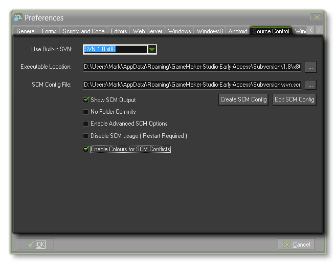
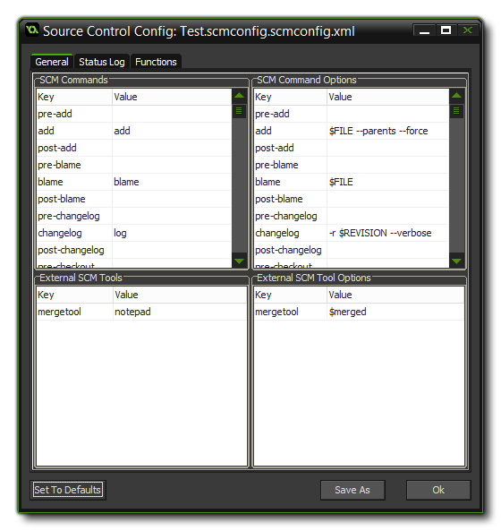

 From this tab
you can point GameMaker: Studio to the version of SVN that you
wish to use for Source Control Management (SCM), or choose a custom
SCM solution. By default this points to the latest version of SV
that is bundled with the program and we recommend that you always
use this version as GameMaker: Studio has been optimised for
it. However, you may have installed a different SCM solution, like
GIT or Mercurial (or wish to use a different solution altogether),
in which case you would need to set the two file paths to point to
the correct binary executable for the solution (for example
C:\Program Files (x86)\Git\bin\git.exe) and then the
location of the configuration file for the solution.
If you do not have a config file, you will need to create one and
include all the commands that you require GameMaker: Studio to use.
These will then be added as part of a context menu that pops up for
SCM in the GameMaker: Studio IDE. You can find out how to
make configurations for Mercurial and GIT from the Source Control Tutorials available from the
YoYo Games Knowledge base, although below you can find a general
outline of the procedure for all SCM solutions.
You can also choose to have the SCM solution output to the
Compiler Message window Source Control tab. Ticking
this will show the log of actions, and should generally be left on.
The next option "No Folder Commits" is designed specifically
for the Mercurial SCM solution, and should not be ticked for either
SVN or GIT. All this does is not commit the SCM solution. So, for
example, if you have this: C:\FolderA\FileA.txt. SVN
assumes you'll add and commit FolderA and then FileA - and
will tell at you if you don't. Git doesn't really care, but it is
best to follow the same as SVN anyway for consistency. However
Mercurial assumes you'll only add and commit FileA - and
will error if you attempt to add and commit FolderA as well. So,
tick this option for Mercurial (or any other SCM solution with a
similar behaviour).
If you are using anything except the built-in SVN tools, then you
should also select the Enable Advanced SCM Options check-box
here. This will give further options when defining your SCM config
file for the chosen tools.
If you do not wish to use any of the built-in SCM options, then you
can disable it completely by ticking the check-box "Disable SCM
Usage" and then restarting GMS. Note that this will remove all
SCM options from the user interface, so if you wish to add source
control to a new project later, you must first enable it here
again.
Finally, you can choose to have the Conflicts Editor use colour
coded conflicts or not (default is on).
Since there are a wealth of commands and possibilities open to
you and each SCM solution has a slightly different way of doing
things, all the SCM tools in Gamemaker: Studio are taken
from a configuration file. This file is generated automatically for
you for SVN, but for GIT, Mercurial or any other solution, you will
have to set this up yourself (as mentioned above, there are
tutorials available from the YoYo Games Knowledge Base).
To create a new SCM configuration you need to click the button
marked "Create SCM Config" which will open the following
window:  As
you can see this window has three tabs, and each tab is split into
it's own sub-sections. Each tab relates to a specifc aspect of SCM
and can be set to suit your own SCM solution based on the
documentation that is provided with it. When you create a new SCM
config, it is created pre-populated with the default values for
SVN, so be sure to revise and change these to what you require.
The tabs are:
- General: The General tab deals with the Common SCM commands and External SCM Tools (which currently only covers the merge tool to use). Each command as a pre- and post- stage, and is split across the top two windows. The windows available in this tab are:
- The first window (top left) describes a common key and the command value to run.
- The second window (top right) describes any parameters to be sent. For example, in the default SVN config, the Add command has the parameters "$FILE --parents --force".
- The third window (bottom left) describes the external tools to use.
- The fourth (bottom right) is for defining the SCM parameters.
- Status Log: The Status Log tab helps GameMaker:Studio understand the log structure of the SCM solution. This is split into three windows:
- The first window (top left) describes the log header names. In the case of the default SVN config, this would include status, props, locked, history, switched, lock-info, tree-conflict, out-of-date and filepath.
- The second window (top right) describes the values that each of these fields support. For example, in the default SVN config, status supports ' ,A,D,M,R,C,X,I,?,!,~'. The filepath key can also use a special $STRING named $PROJECTPATH which ensures that the files in the list only belong to the current project's path (note that the asterisk '*' can be used to denote "accept anything").
- The third window (bottom left) describes what the status symbols mean, in a common format. For example, SVN's ' ' ( space ) is generally meant to mean unmodified in the status log.
- Functions: The Functions tab allows you to define the Source Control right-click menu in the Resource Tree, as well as add additional functions to the menu that not every SCM solution has - such as lock/unlock, or push/pull. This is also split into three windows:
- The first window (top left) describes the common functions to be displayed in the right-click menu. New functions can be added by clicking the Add Function button. Clicking on a cell in the Command column will bring up a drop down box with the available commands to choose from. The Title is what will be displayed on the menu.
- The second and third windows (bottom left and bottom right, respectively) are similar to the previous tabs, in that the left one describes the commands, and the right one describes the arguments. Again, both Command columns must match up - the Title column describes what will be displayed on the menu, and the Options column can contain the $FILE string.
At any time you can reset a tab to it's default values by
clicking the button labelled "Set To Defaults", and you can
also save any configuration to a specific place for safe-keeping by
clicking the button "Save As". these can then be loaded
again at any time from the file path selector of the Preferences
(as mentioned above).
You can find further information on Source Control Management from
the pages on Source
Control and there are additional articles that cover how to set
up GameMaker: Studio to work with GIT (for example) from the
YoYo Games Knowledge Base.